|
|
| crabs text index | photo index |
| Phylum Arthropoda > Subphylum Crustacea > Class Malacostraca > Order Decapoda > Brachyurans | Family Calappidae |
| Spotted
box crab Calappa philargius Family Calappidae updated Dec 2019 Where
seen? This large boxy crab with four big spots on its flat
pincers is sometimes seen on the sandy shores near seagrass areas on our Northern shores.
It is more active at night and are rarely seen by daytime visitors
as it is then usually buried in the sediments. Once, several pairs
were seen half buried near one another. |
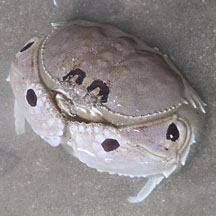 Changi, May 12 |
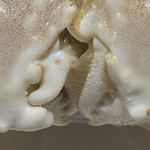 Two different kinds of pincers. |
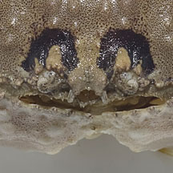 Eyes! |
| What does it eat? The pincers of box crabs are specialised for cracking open snail shells. The snail is gripped in the left pincer which has pointed claws. With the right pincer, which is stronger, the crab cuts pieces of the shell from the shell opening. Once the gap is big enough, the crab can enjoy its snail meal. |
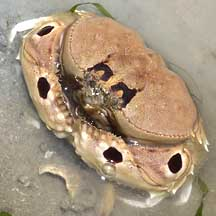 Changi, May 06 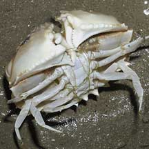 Underside. |
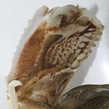 Patterns on inside pincers. 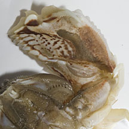 Changi, May 12 |
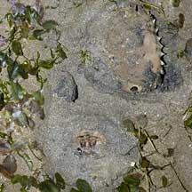 A pair buried next to one another. Changi, May 06 |
| Status and threats: This crab is listed as Vulnerable in the Red Data List of threatened animals of Singapore. |
| Spotted box crabs seen on Singapore shores |
On wildsingapore
flickr
|
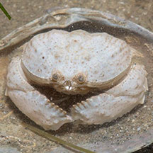 Changi, May 17 Photo shared by Marcus Ng on facebook. |
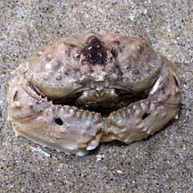 Changi, May 11 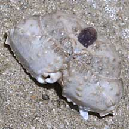 Tanah Merah, May 11 |
Changi, May 11 Tanah Merah, May 11 |
|
Links
References
|